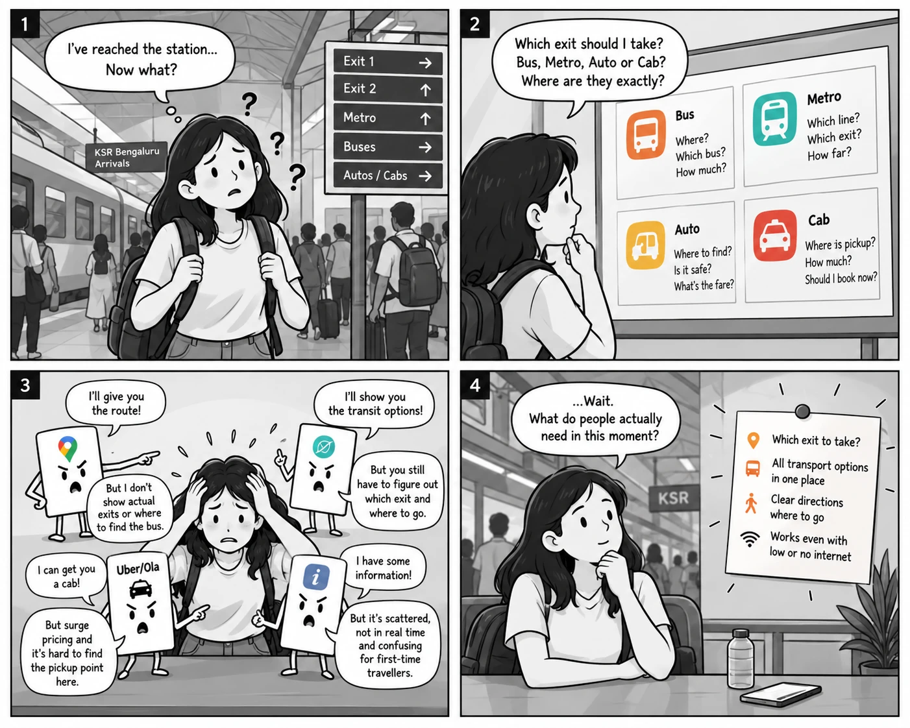
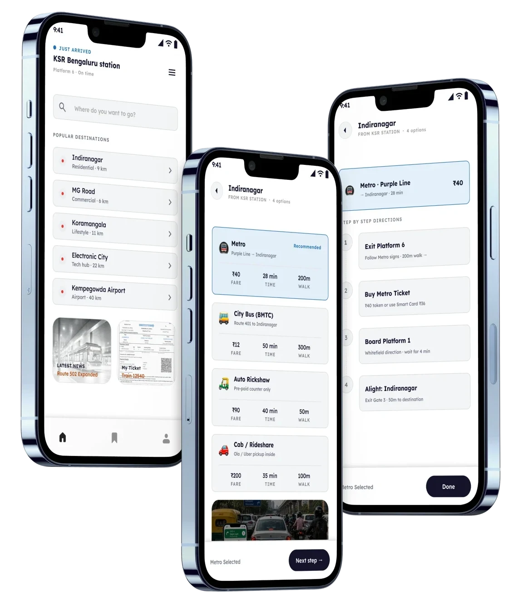
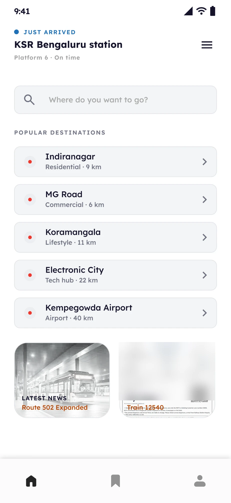
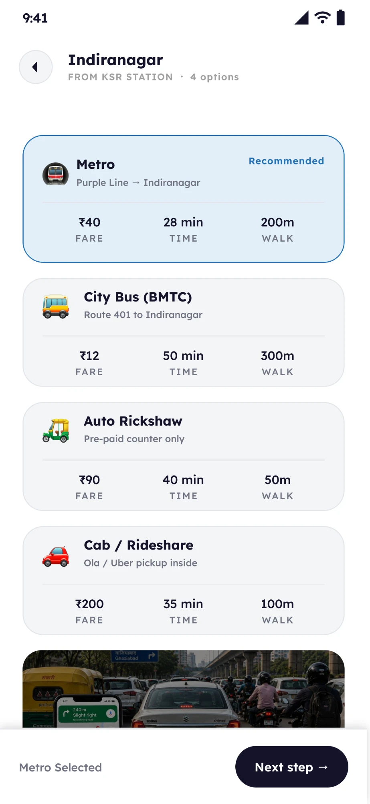
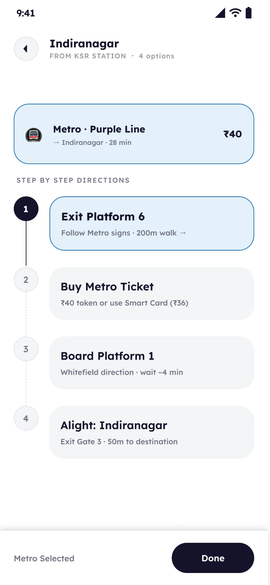
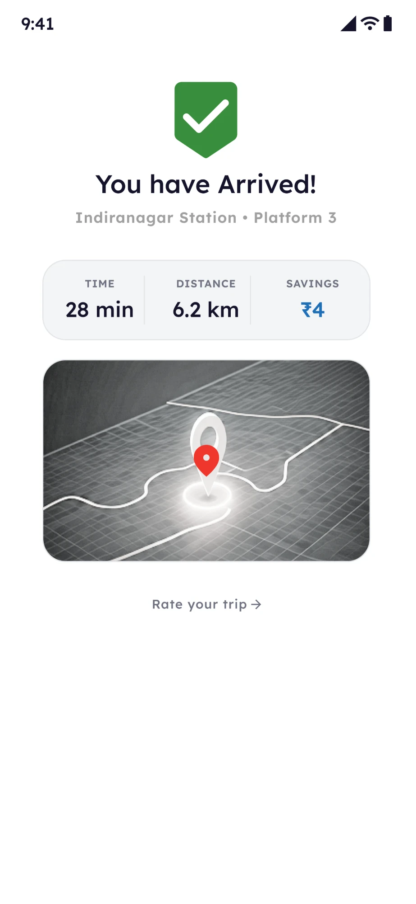

The best time to help is before they arrive.
After a long train journey, people may be tired, carrying luggage and rushing to their next ride. Instead of asking them to figure it out at the station, help them prepare before they get there.

So the product works in two moments
- 1Choose a destination
- 2Understand the options
- 3Prepare the route
- 4Save the information
- 1Confirm in a glance: you are here
- 2See the exit
- 3See the transport
Who it is for
- Travellers arriving in a new city or state, with no idea about the area.
- It does not take passengers away from local transport such as rickshaws. It points travellers towards them and eases the unawareness of a new city.
Maps gets you there. The station still has questions.
Maps can say KSR Bengaluru to Indiranagar. The traveller still has to find the exit, the bus and the way to walk.
Destination → Route
Destination → Exit → Transport → Physical way
Maps solves the route. Last Mile solves the transition.
Today, travellers join the pieces themselves
The aim is to make basic station to transport directions self serve. People can still be asked.
The information exists. The uncertainty is in the transition.
One evening at KSR Bengaluru, October 2025, I watched three small moments.
- 121:14, Platform 7. A couple asked three people for the Majestic bus gate. Each pointed a different way.
- 221:38, Exit 1. A ₹350 cab to Indiranagar, while a ₹20 bus ran about 90 seconds away.
- 322:02, Gate 2. A traveller at 8% battery opened Maps, Uber, then Maps again.
Travellers are not short of information. They are short of the next decision.
So: prepare before arrival, and confirm in a glance after. Three observations frame a problem. They do not size it. That people have more attention before arriving than after is my assumption, not a measured finding.
Three principles guided every screen
Design for the physical world
Say which exit and where to walk.
Reduce decisions
Pick, do not type.
Compare, do not prescribe
Show every mode. Let them choose.
Prepare before arrival. Confirm on arrival.
Here is the product, in the order a traveller meets it. These four screens were designed around arrival. The direction is to move the first two earlier, onto the train.

The three core screens: choose a destination, compare the ways to get there, follow the directions.

1
2
3
4The prototype in motion
I stopped designing a transit app and started designing an arrival experience.
My first version looked like every transit app. A traveller does not want to explore one. They want to know what to do next.
Still unresolved: search sits at the top, and Metro carries a Recommended badge. I would test thumb reach, and whether the badge helps or quietly steers.
How do we keep offline information trustworthy when the physical world changes?
Offline first does not mean offline only. Some information holds still, and some does not.
Stable, can be saved
- Station layout
- Common exits
- Basic directions
Changes, needs refreshing
- Bus routes
- Fares
- Service availability
- Temporary changes
What the traveller sees as connectivity changes
The latest information, with its update time.
The last saved guide, with its date.
Essential guidance only: exits and directions.
A design direction, not built. Keeping saved information fresh is a future consideration and a validation requirement.
Local transport stays in the picture
- Rickshaws, autos, cabs and buses remain part of every journey. The app does not take passengers away from them.
- It helps travellers who know nothing about the city find them, and know what to expect.
Informed choice, not mode elimination
Prototype values for Indiranagar. The product makes the trade offs visible and does not decide.
What Last Mile deliberately does not do
I started by designing a transit app. I ended up designing the transition between a train and a city.
The best experience is not always the one that gives users more information. Sometimes it removes the uncertainty around their next decision.
Design the moment, not the entire journey.
What the design shows
- A destination first flow
- Four modes compared side by side
- Physical directions from the platform
- A path from preparing to arriving
What still needs validation
- Decision time, against the 10 second target
- Whether preparing early changes behaviour
- Accuracy of exits, fares and pickup points
- How information stays fresh
My role
- Frame
- Turned field observations into a before and after arrival problem.
- Scope
- One station and one transition, and what to leave out.
- Design
- Destination, comparison, directions and confirmation screens.
- Iterate
- Moved directions into the core flow between V1 and V2, and worked through offline use and freshness.